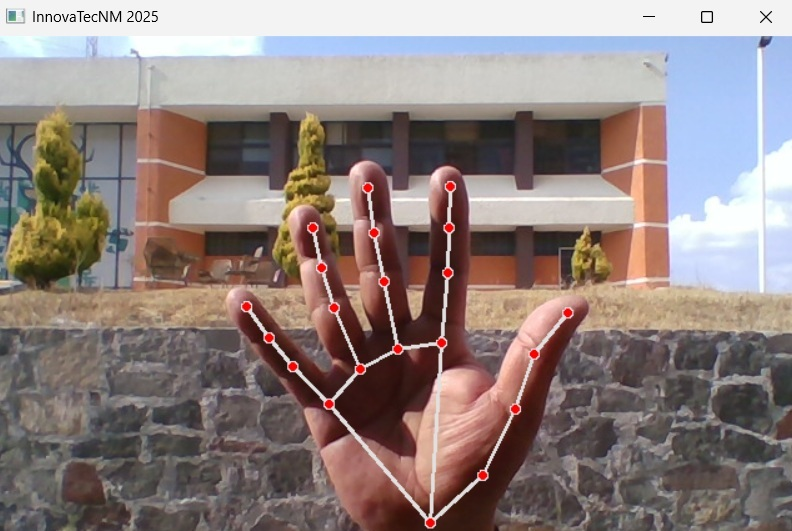
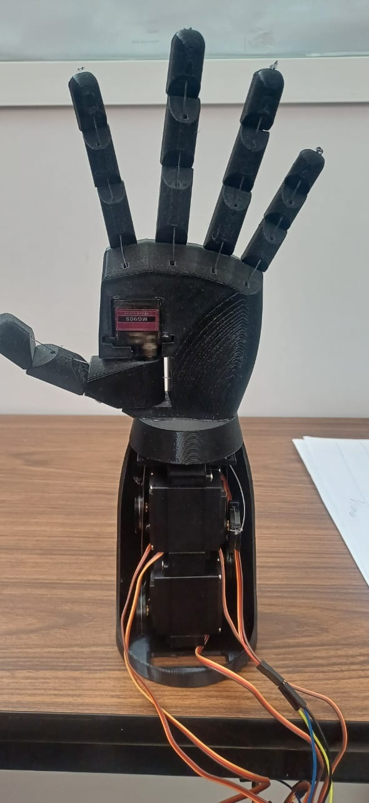

Galería del Proyecto

Visión Artificial
El software detecta y sigue los movimientos de los dedos en tiempo real utilizando una cámara.

Mano Robótica 3D
Prototipo funcional de mano robótica impresa en 3D, controlada electrónicamente para simular la terapia.

Programación de movimientos
Tarjeta de adquisión de datos para el procesamiento de información